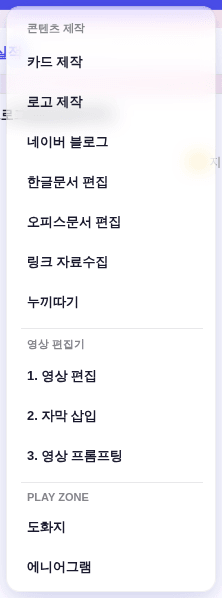
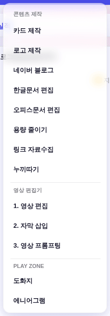
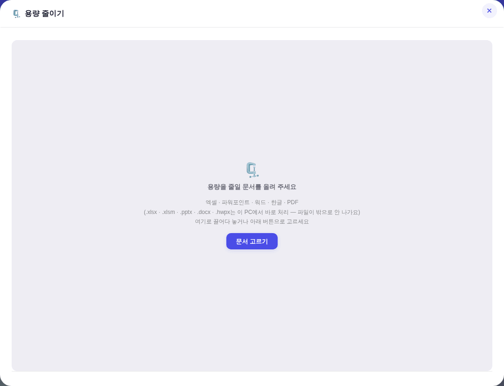
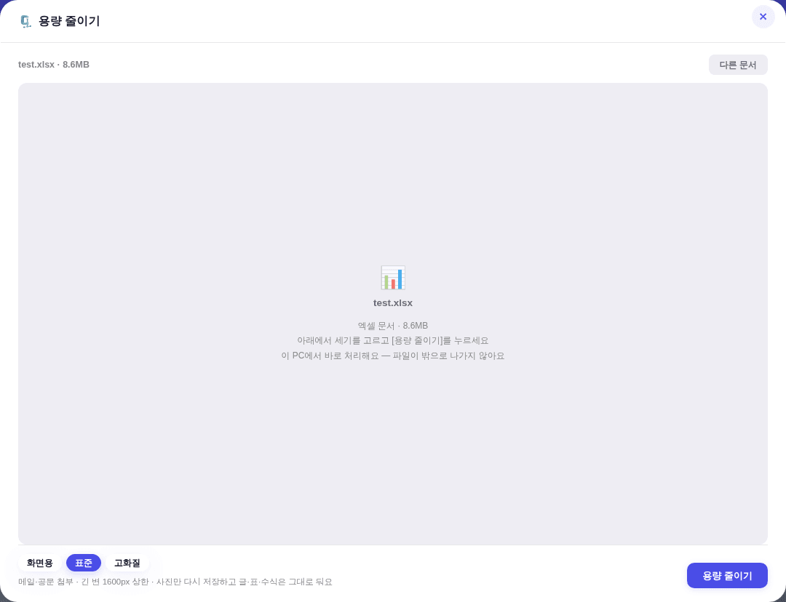
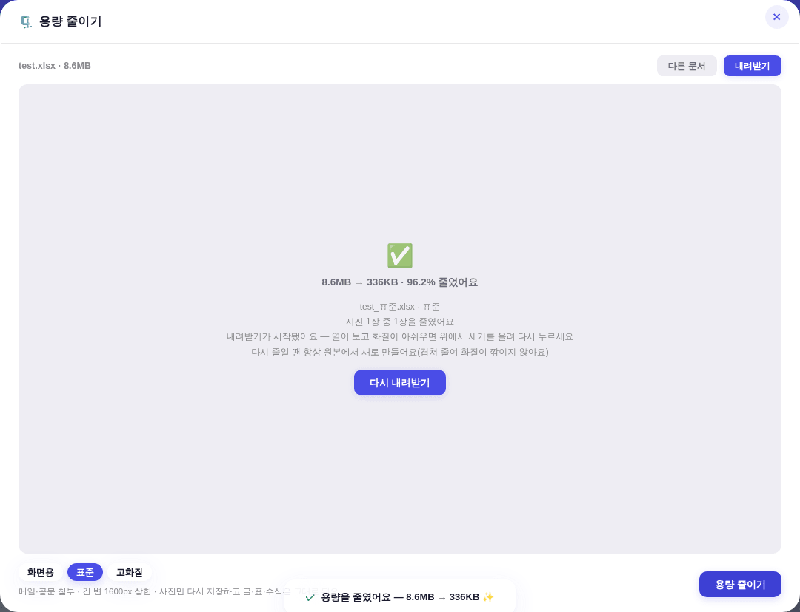
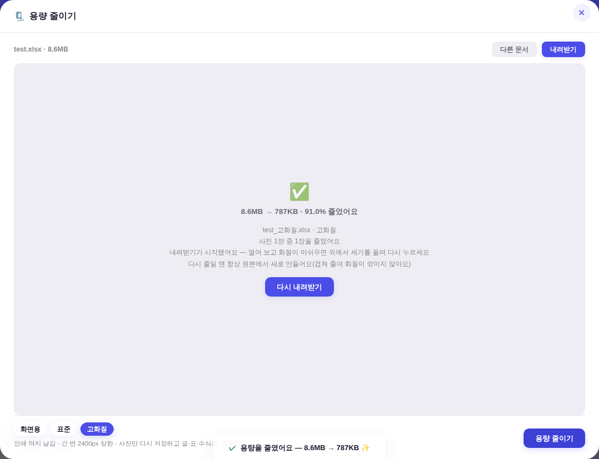
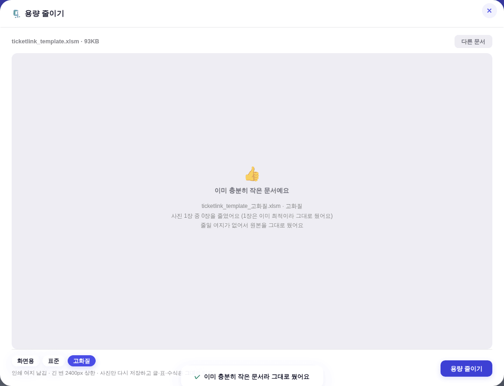

지시(운영자): 「엑셀 파일 이미지를 압축하는git이 있어? 확인해주고, 엑셀, ppt, pdf, 한글 파일 용량줄이기 개념으로 기능을 탑재하고싶은데」 → 선택지 제시 후 「하이브리드」 + 「3단 선택」 확정.
아래 스냅샷은 정본 하네스(tools/smoke_layout.mjs)와 같은 방식으로 ?qa=admin 목데이터를 1500×900 헤드리스에 띄워 찍은 것 —
실API·실데이터 미접촉. 「전」은 git show origin/main:index.html을 그대로 서빙해 같은 시나리오를 두 판본에서 돌렸다.
| 저장소 | 방식 | 왜 그대로 못 쓰나 |
|---|---|---|
| cometeme/compress-office MIT · Python · ⭐12 |
docx/pptx/xlsx를 풀어 optipng·jpegoptim·gifsicle로 무손실 압축 후 되말기 | 외부 바이너리 의존(브라우저 불가) · 축소를 안 해 감량폭이 작다 · PDF·한글 없음 |
| district10/compress-excel-images bash · ⭐1 |
ImageMagick으로 임계치까지 반복 축소 · CMYK→RGB | 외부 바이너리 의존 · xlsx 전용 |
xlsx xlsm xltx docx dotx pptx potx hwpx)이 ZIP 컨테이너이고
사진은 xl/media/·ppt/media/·word/media/·BinData/에 그냥 들어 있다. 12스타 저장소에 의존을 걸 이유가 없고,
이 레포는 이미 JSZip을 쓰고 있다(티켓링크 파서 _tktEnsureJSZip) → 신규 의존 0.of-*) 경로를 그대로 미러하면 전 형식이 Worker b64 상한에 묶인다 — 20MB PPT를 줄이러 온 사람이 파일을 못 올린다.
그래서 ZIP 컨테이너 7종은 브라우저에서 끝내고(서버 무경유 · 파일 무반출 · 상한 200MB), ZIP이 아닌 PDF·구형 hwp 2종만 러너로 보낸다.| 브라우저 즉시 (7종) | 러너 경유 (2종) | |
|---|---|---|
| 대상 | .xlsx .xlsm .xltx .docx .dotx .pptx .potx .hwpx | .pdf · 구형 .hwp |
| 왜 갈리나 | 전부 ZIP 컨테이너 = JSZip으로 열린다 | PDF = XObject 구조 · HWP 5.0 = CFB 복합문서 + raw-deflate 스트림 |
| 소요 | 0.4~0.5초 | 1~3분(Actions 왕복) |
| 파일이 나가나 | 안 나간다(온디바이스) | 레포에 임시 커밋 → 즉시 삭제 + 자동 회수 |
| 용량 상한 | 200MB(캔버스 메모리 안전판) | 8MB(Worker b64 검사) |
| 엔진 | JSZip + 캔버스 | Ghostscript · SheetJS cfb + sharp |
| claude -p | 양쪽 다 안 쓴다 — 압축은 결정적 처리라 판단할 게 없다. slim.yml에 OAuth 시크릿이 아예 없고 계정 체인·쿼터를 전혀 안 먹는다(한글문서·오피스문서 편집과 갈리는 지점) | |


항목 문법(itemCss·호버 알파)은 기존 빌더 그대로 — 신규 색·형태 0.
hw-*/.u-empty/.btn 정본 재사용
.nb-chip/.nb-chiprow 재사용) + [용량 줄이기]
test_표준.xlsx가 받아졌다)


브라우저 갈래는 index.html에 실제로 들어간 코어 코드를 파일에서 슬라이스해 헤드리스 크로미움에서 돌린 값이다(복사본이 아니라 배포본).
| 파일 | 원본 | 화면용 1200px·q75 | 표준 1600px·q82 | 고화질 2400px·q88 | 비고 |
|---|---|---|---|---|---|
test.xlsx 레포 실제 8.9MB PNG 삽입 | 8.55MB | 0.17MB −98.1% |
0.33MB −96.2% · 26.1배 |
0.77MB −91.0% |
383~471ms · PNG→JPEG 전환 + .rels/[Content_Types] 추종 |
test_alpha.pptx 불투명 사진 + 투명 로고 | 8.55MB | 0.17MB | 0.33MB | 0.77MB | 투명 로고는 PNG 유지(축소본 900×900 중 405,000px = 정확히 절반 투명 보존) · 불투명 사진만 JPEG 전환 |
ticketlink_template.xlsm 레포 실물 | 0.09MB | 0.09MB | 0.09MB | 0.09MB | 무접촉 — 이미 최적이라 전 이미지 유지 판정(−0.0%) |
test_image.hwp 사진 2장 · 압축본+무압축본 혼재 | 4.85MB | 0.24MB −95.1% | 0.51MB −89.5% | 1.30MB −73.1% |
사진 외 스트림 변조 0 · 유실 0 |
test_image.pdf 스캔형 A4 | 1.18MB | 0.15MB −87.7% | 0.38MB −67.9% | 0.38MB −67.9% |
gs는 정수배로만 다운샘플 → 표준·고화질이 같은 배율(÷2)에 걸려 동값 |
사무처리규정.pdf 레포 실물 · 본문형 | 1.06MB | 0.91MB −13.9% | 0.95MB −10.1% | 0.96MB −9.5% |
추출 글자수 284,591 → 284,958 보존(본문이 사진으로 안 구워짐) |
구조 검증(브라우저 갈래 3세기×3파일): 파트 수 불변 · .rels 끊긴 참조 0 · [Content_Types] 미선언 확장자 0 · 이미지 단위 증가 0 · hwpx 파트명 불변 — 전건 통과.
-dPDFSETTINGS=/ebook 프리셋을 쓰지 마라 — 사진을 안 줄인다.
gs는 PassThroughJPEGImages가 기본 참이라 JPEG를 무손질 통과시키고, 프리셋의 DownsampleThreshold(1.5)까지 겹친다.
290dpi 사진이 /ebook·/printer에서 그대로 나왔다:
| 프리셋 | 결과 |
|---|---|
| 원본 | 1,241,093 B |
/screen | 195,406 B |
/ebook | 1,242,896 B (+1.8KB) |
/printer | 1,245,668 B (+4.6KB) |
sl + Date.now()(13자리) + 난수(최대 3자리)라 (\d+)는 ≈1.75e15를 캡처하고 now − 그것이 늘 음수 → > ttl이 참이 안 된다.
신설 slim.yml은 (\d{13})\d*로 고정했다.
⚠ 기존 office-edit.yml·hwp-edit.yml의 같은 자리는 (\d+)라 원본·산출물 자동 회수가 실제로는 안 돌고 있다 — 이번 범위 밖이라 손대지 않았고, 개선 우선사항에 별건으로 등재했다.| 불변식 | 구현 | 실증 |
|---|---|---|
| ① 절대 안 키운다 | 이미지 1장 단위 + 파일 전체, 두 층에서 검사해 원본 이상이면 원본 유지 | ticketlink_template.xlsm −0.0% 무접촉 · 이미지 단위 증가 0건 |
| ② 포맷 전환은 OOXML에서만 | 투명 있으면 PNG 유지 / 없으면 JPEG. 전환 시 파트 이름·.rels Target·[Content_Types].xml을 따라서 고친다. hwpx·hwp는 매니페스트·DocInfo가 얽혀 있어 전환 금지 | 투명 405,000px 보존 · Target="../media/photo1.jpeg" 추종 · <Default Extension="jpeg"> 자동 추가 · hwpx BinData 파트명 불변 |
캔버스가 못 여는 형식(EMF/WMF 벡터 등)은 무접촉 — 지우면 도형이 사라진다.
check_design ✓(raw hex index 1578/1578 무변 · :root 2/0 · 신규 CSS 0) · check_refs ✓ · check_wiring ✓ ·
YAML 파싱 ✓ · node --check (slim_runner.mjs · src/index.js) ✓.
재사용 컴포넌트 = .modal/.modal-x · .btn · .nb-chip/.nb-chiprow · .u-empty · .hw-bar/.hw-stage/.hw-ask · _ldHtml.